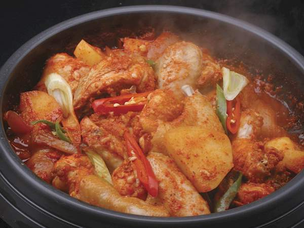

dakbokkeumtang | spicy korean braised chicken

mildly spicy, potatoey chicken braise. fk winter.
ingredients
chicken and vegetables
- 1 kg chicken, cut into medium sized chunks
- 1 cup water
- 2 large potatoes cut into six pieces
- 1 carrot, cut into quarter inch rounds
- 1 large onion, rough stew chop
- 2 spicy peppers of your choosing, sliced thin on bias
- 1 leek, sliced thin on bias, greens and whites separated
yangnyeom
- 3 spoons gochujang
- 2 spoons gochugaru
- 2 spoons rice wine
- 2 spoons soy sauce
- 1 spoon sugar, mulyeot, or honey
- 1 to 3 spoons minced garlic
- 1-2 tsp minced ginger
- short drizzle sesame oil
- black pepper to taste
instructions
- soak chicken in (butter)milk 30 minutes prior to cooking, rinse, set aside (optional)
- mix yangnyeom ingredients in bowl and set aside
- brown chicken in one spoon canola or other high smoke point oil in batches until golden and set aside on plate (can skip if not interested in awesome maillard reaction and max flavor)
- add all chicken back to pan with yangyeom and water, boil over medium-high for about 10 mins, covered
- add carrots and onions and boil five minutes, stir
- add potatoes, reduce heat to medium/medium low, avoid sticking, watch heat
- after 5 minutes, rotate chicken and potatoes, add white leek slices, and boil five more minutes or until potatoes are fork tender
- turn off heat, drizzle good sesame oil but not too much to make bitter, maybe 1 or 2 teaspoons, garnish with green slices of leeks and sesame seeds
get creative--use stock vs water, use dr pepper or coca cola vs sugar, add mushrooms, bay leaf, use sweet potatoes or butternut squash